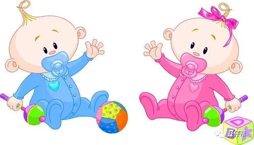
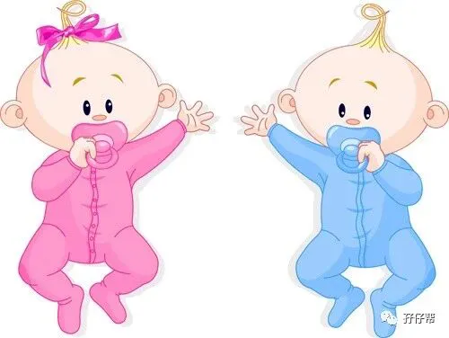
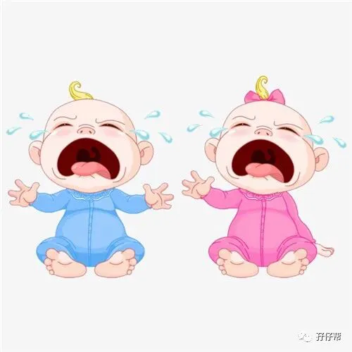
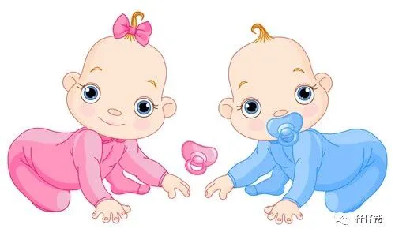
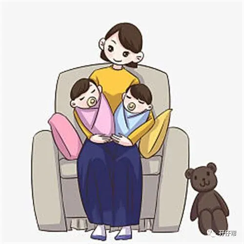
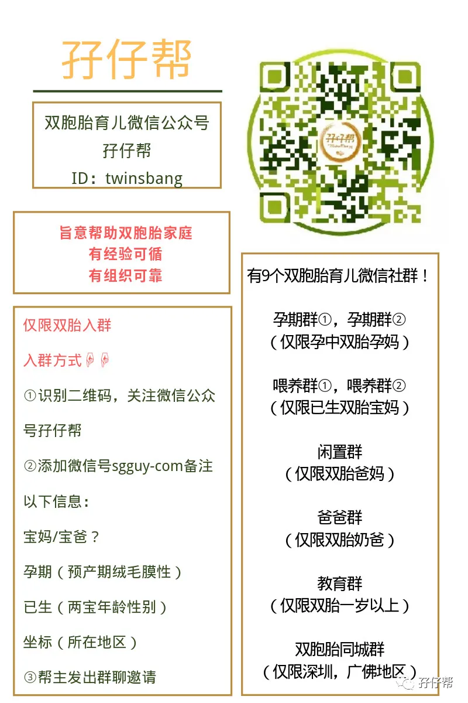

文|圆圈妈，一个文思如尿崩的双胎妈妈
图|来自网络，如有侵权，请联系删除
· 正 · 文 · 来 · 啦 ·
有人说，世界上只有两种女人，生过孩子和没有生过孩子的。
我想说，我属于第三种，生过孩子，但一口气来两孩子的女人。
没生孩子，我什么都不缺，只缺钱，生了两孩子，我啥都缺，尤其缺爱！
双胞胎妈妈大概是这世界上最缺爱的人了。
从知道肚子里面有双蛋黄那一刻开始，下半辈子命中注定要与其他女人不一样。
这个不一样呈现两极分化，有人欢喜有人愁，而发愁的通常占多数。
要么是为了孕期过六关斩五将担惊受怕，要么是卸货后为了两宝宝的口粮殚精竭虑。
其实，你为什么只盯着那些几万分概率才可能发生的并发症而担惊受怕呢？为什么要为了不能同时亲喂两个宝宝而内疚不已呢？
cheer up!
你可是双胞胎妈妈，自带光环的女主角，单手抱两只的女战士！
如果你实在脑补不了，看看我这4年来的经历，遇到的那些明星般的待遇。
也许你会找到些笑点泪点，然后情不自禁发出周杰伦的千年老梗之声：“哎呦，不错哟！”
家有双胞胎，挺好的！
①产检做胎监有专用宝座
在留医部住院保胎时，我最抵触的是做胎监，一想到要去待产区做胎监，我就感觉两腿像绑了铅块似的沉重。
躺在硬邦邦的病床上，一躺就是个把小时，每次都跟腰斩似的，上半身与下半身分成两段。
就好像洗头男酱爆投诉包租婆怎么突然间没水一样，我请求护士小姐姐能不能给我安排个舒服点的床位时。
助产士很鄙夷地说：“你已经在享受最高级别的胎监了！单胎妈妈都在隔壁间坐着做胎监！”
OK！明白了！
原来留医部的胎监是坐着进行的！
只是因为我双胎肚子太大，身体体积和压强太庞大，没有符合我尺寸的椅子，只好把我挪床上去了，而这床是给外面那群排队顺产等待开指的待产妇用的！
那一刻，我真心感激，幸好我是双胎孕妇！我比等开指顺产的待产妇“重要”多了！
②提前享受孕妇专用座
一天跟闺蜜聊起孕期那些破事，她说整个孕期都没人给她让座，因为她又高又胖，衣服穿多了，丝毫看不出是孕妇。
我得意洋洋地告诉她：“孕17周就有一群好心人给我让座了！”
的确，拜双蛋黄所赐，双胎孕肚的两大特点，早显怀和异常大。
4个月就显怀，5个月能顶人家单胎8个月，真到了双胎8个月，已经是“谁敢与之争锋”的境界了。
所到之处，方圆500米内，无人敢靠近，路人都避之不及，纷纷让路。
我坚持到28周就休产假了，再也不想麻烦那些好心的司机和乘客了。
他们看到我上车那一刻，真把我当女神一样，纷纷站起来让座。
我突然好怀念孕前路人甲的日子，这种备受瞩目的感觉让我很不自在，甚至瘆得慌！
③做B超有专家为你保驾护航
只要是双胎妊娠均属于高危妊娠，甭管单绒还是双绒。
鉴于双胎的特殊性，医院对待双胎孕妇的产检都会格外重视，建议孕妇预约副高级别的医生，并安排有相关经验的医生做B超或者胎儿会诊，尤其是中孕期的胎儿结构筛查。
我孕期所有超声检查都是副高级别以上或者有双胎经验的医生给安排的。
每次分诊台的护士看到我是双胎就说：“你得多等下，今天只有**主任值班，去*室门口等吧！”
一想到有技术过硬，经验丰富的医生为我的双胎妊娠保驾护航，心里踏实多了。
仔细想想，这种因双胎带来的特殊待遇，还是挺划得来的嘛。
④出门遛双胞胎，尊享明星般的待遇
如果说以上提到的特殊待遇都不能满足你，那带着双胞胎上街，被路人围攻拍照时，你总该允许里面那颗蠢蠢欲动的虚荣心尽情膨胀一下吧！
带着双胞胎上街，会有种自带主角的光环，好像浑身上下有万丈光芒似的。
哪怕用黑布盖住，都难掩那种与众不同的气势，总能轻而易举地获取到路人的眼球。
孕前，我就是路人丙一枚，大众化到什么程度呢？
就是那种，走在路上有山贼来抢压寨夫人，我永远不用担心被抢，还特么担心被人挑三拣四那种！
自从当了双胞胎妈妈后，我好像一下子升级到至少女配角的档位。
通常路人注意到圆圈兄弟时，也会很好奇地多看我几眼，然后心里嘀咕下：“这女人也太能生了吧，一胎搞定俩。”
圆圈兄弟3月龄，第一次带他们出去溜达，两辆婴儿车并驾齐驱，拉风极了，路人纷纷顿足，侧目，探头，微笑…
我觉得自己走路都带风，身怀绝技，轻功了得...
完全忘记了连日来的不眠不休，一心一意沉浸在这种唯我独尊的自豪感中。
⑤基本不用为“生二胎”烦恼
除非你的目标是三胎，四胎，不然你真的是很多女人在生儿育女上梦寐以求的终极目标，尤其是一胎来个龙凤胎的妈妈，真的是集万千宠爱于一身的女人。
以前，我总是不能理解为什么有人会因为不用生二胎而羡慕生双胞胎的人，甚至明明可以正常生育却要去做试管多胞胎。
经历过养育双胞胎这4年，我深刻地体会那个说出羡慕不用生二胎的人，背后藏着多么痛的领悟。
闺蜜生二胎后，一直处于失联状态，突然有一天给我发来一个大哭的表情，然后整个屏幕都被“大哭”霸屏了。
手机那端的她敲出这个表情时，一定是崩溃到边缘了，无言语，唯有心中泪千行，隔着手机屏幕都能感受到“心有悲戚，无可奈何”那种！
看到曾经那么意气风发的她为了二胎如此狼狈不堪，我更加庆幸，在生儿育女这个环节，我只受一次罪就基本上完成了任务。
虽然两个儿子的家庭是处在鄙视链的最底层，但给两个孩子找了一个伴儿，被踩在脚底下也没关系了！
养育双胞胎是一段先苦后甜的旅程。
不管你目前是尚在酸爽的孕期还是处于苦逼的育儿混战中，多想想正能量的东西，抛开消极负面的情绪，也许你会觉得整个双胎孕育过程除了满满的甜蜜素还有浓浓的幸福感。
既来之，则安之！
怀上双胞胎，就认真怀孕，卸货双胞胎，就好好养娃。
姑娘们，披上双胞胎妈妈的铠甲的你，本来就很美！
今日互动话题
#家有双胞胎的你，遇到哪些特殊待遇呢#
欢迎留言区分享你的经历
-END-
重磅互动
#你希望写什么育儿经验干货？#
评论区聊一聊
随便提，万一下篇就写了呢？
关于这个号
谢谢关注！
我是圆圈妈
85后，全职妈妈
家有孖仔两枚，圆圈&圈圈
双胞胎育儿公众号：孖仔帮
ID:twinsbang
旨意分享双胞胎育儿经验帮助双胞胎家庭
有经验可循
有组织可靠
希望我的经验对您有所启发
期待与您一起共享双胞胎育儿经






